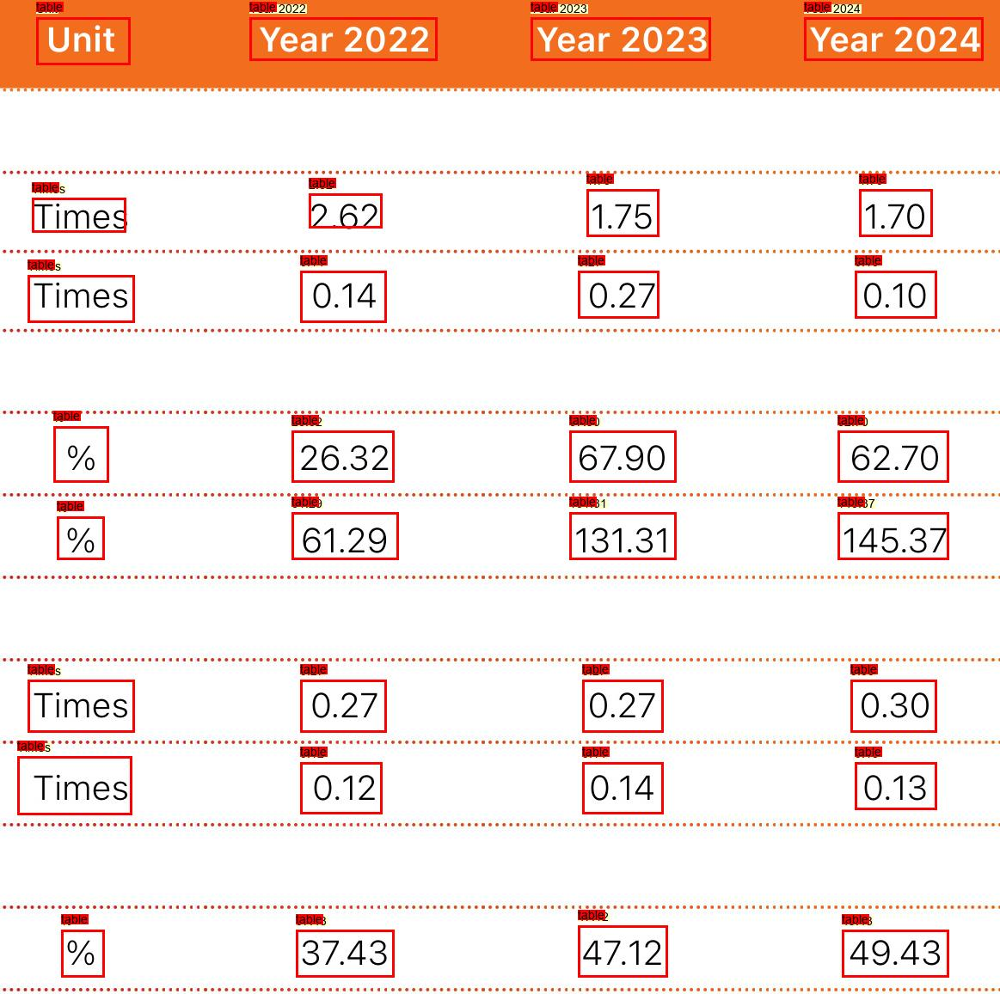
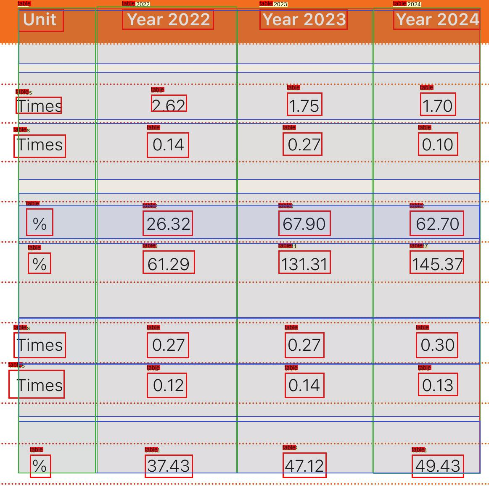

9r x 4c, 0 metrics | 14 TATR cells


| # | C0 | C1 | C2 | C3 |
| 0 | Unit | Year 2022 | Year 2023 | Year 2024 |
| 1 | Times | 2.62 | 1.75 | 1.70 |
| 2 | Times | 0.14 | 0.27 | 0.10 |
| 3 | % | 26.32 | 67.90 | 62.70 |
| 4 | — | — | — | — |
| 5 | % | 61.29 | 131.31 | 145.37 |
| 6 | Times | 0.27 | 0.27 | 0.30 |
| 7 | Times | 0.12 | 0.14 | 0.13 |
| 8 | % | 37.43 | 47.12 | 49.43 |
| Metric | Value | Unit | Year | Scope | Type |
|---|